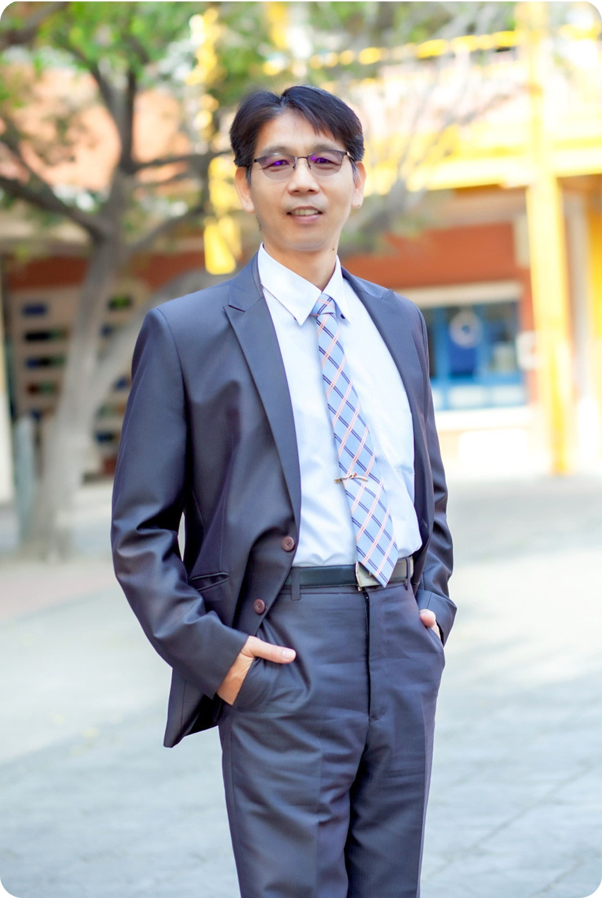

校
Warm & Harmonious 溫馨和諧 · 校園文化
A campus that feels like a small town — where teachers, students, and parents all know each other's names.
A twenty-year young school in northern Xihu — led, today, by its third principal: an engineer-turned-educator who, after seven years leading a sister school in Erlin, walked through Hu Bei's gate in August 2021.
一所創校 20 年的溪湖北側小學——今天，由第三任校長帶領。他是工科出身的教育者，在二林興華國小擔任校長七年半後，於 2021 年 8 月走進湖北校門。

Since 2021Principal Chuang's path to Hu Bei is unusual for an elementary-school principal in Taiwan. He grew up in Erlin, graduated from Erlin Junior High, and studied mechanical engineering at Taichung Industrial Vocational High School before earning his bachelor's degree in Industrial Education from National Changhua University of Education — the country's flagship technology-education university. He went on to a master's degree in Teaching Arts at Ming Dao Management College.
He taught automotive technology at Dade Vocational High School, then became a homeroom teacher and information section chief at Minjing and Zhongzheng elementaries. From 2018 to 2021 he served as Curriculum Inspector at the Changhua Education Department, before being appointed the tenth principal of Xinghua Elementary in Erlin — where he served for seven and a half years, from February 2014 to July 2021. In August 2021 he was assigned to Hu Bei. In August 2025 he was reappointed for a second term.
莊世雄校長走到湖北的路徑，在臺灣的小學校長中並不常見。他在二林長大，念二林國中，進台中高工機械科，後來進國立彰化師範大學工業教育學系取得學士——這是臺灣科技教育的旗艦學系。他另外完成明道管理學院教學藝術研究所的碩士學位。
他曾在達德商工教汽車科，後來轉任民靖國小級任教師、中正國小資訊組長與主任。2018 年起擔任彰化縣政府教育處課程督學，2014 年 2 月奉派為二林鎮興華國小第十任校長，服務七年半；2021 年 8 月起轉任湖北國小校長，2025 年 8 月連任原校。
From Tsai Pao-yu, who opened the school in 2005, to Chuang Shih-hsiung, now in his second term.
從 2005 年建校的首任校長蔡寶玉，到目前進入第二任期的莊世雄校長。
Teachers are the school's greatest asset; parents are its richest resource; and students' growth — that is its most important educational outcome.
教師是學校最大的資產；家長是學校最豐富的資源；學生的表現，是學校最重要的教育成果。
Principal Chuang's framework for the daily life of a school — not three or four, but five quietly interlocking cultures.
莊校長為校園日常拈出的五種文化——不是三、不是四，而是五種彼此咬合的氛圍。
A campus that feels like a small town — where teachers, students, and parents all know each other's names.
Children who don't wait to be told. Six sports teams, science fair entries, English recitals — all because kids put their own hands up first.
Teachers learning from teachers. Professional learning communities, peer coaching, and a respect for the craft of the classroom.
A solar-powered, well-lit, well-maintained campus — built so children can run, climb, and learn without anyone needing to look over their shoulder.
Story-telling parents, family walks on Mother's Day, classroom volunteers. A school whose gate stays open to the village that fills its classrooms.
Educators, parents, and friends from Taiwan and abroad are warmly welcome to visit Hu Bei. We are especially keen to talk with colleagues working on STEM in rural elementaries, multi-sport youth development, and what bilingual really means in a 20-year young school.
歡迎國內外教育工作者、家長與朋友蒞校交流。我們特別樂於與致力於偏鄉 STEM、多元體育、以及「雙語教育在新興小學的真正樣貌」的同路人對話。